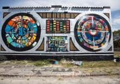
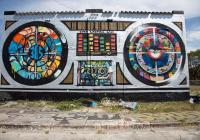

Echo Hotel
Amsterdam


 


Echo hotel is a charming establishment with a 3 star rating, located on a quiet street. Ideally situated in the cultural centre of Amsterdam, the comfort and hospitality of Echo Hotel can be found just a few minutes from the Van Gogh or Rijksmuseum and the astonishing historic city centre. We are delighted to welcome you and will make sure that you enjoy your stay and feel at home.
Our services and amenities are designed to make your travel easy, your stay comfortable, and your experience one-of-a-kind.
We're committed to maintaining the same quality of service for every individual. We offer the following facilities for those with special needs:
The Echo Hotel was recently renovated, and we considered the impact on the earth the entire way. From green building materials, to solar power, to energy-friendly lighting and appliances throughout the hotel - we’re saving energy in every socket, outlet, and switch. We’ve also initiated a recycling and composting program that reduces the load to local landfills, while providing valuable raw material for use in new products, or in the case of compost, for use in local gardens and landscapes.
Our guest rooms feature sumptuous classic furnishings that evoke visions of Amsterdam's rich and long-standing tradition of royalty. While our rooms are decked out in classic design, they each have a modern flair, and contain all the modern comforts expected in today’s luxury hotels. We’ve named our rooms for the notable public squares and circuses around.
This exclusive and richly appointed 990-square-feet suite has one king bed, a full and spacious living room with sofa sleeper and two bathrooms. It also has luxurious alpine décor and stunning views of Central Square.
Extra spacious room with a fully furnished sitting area for private and undisturbed meetings. Work at the spacious desk with the courtyard providing a peaceful view.
Ground floor unit featuring king bed, view of garden patio, Ethernet cable and work area. Handicap accessible. Maximum occupancy is 2 adults.
This suite is stand-alone, unique and one of a kind. This suite has a separated bedroom with a king bed and flat screen TV. Wide area living room with flat screen TV mounted over the stone gas fireplace.
Located on the fourth floor. This suite has a separated bedroom with a California King bed. The bedroom is furnished with a desk and chair, and flat screen TV mounted above the two-sided stone gas fireplace.
The room has a meditative ambiance created by the fantastical wall treatment of “invented” plaster relics with “cloud-like” forms.
Central area restaurants provide delectable delights and unique ambiance no matter if you’re looking for the perfect scene to pop the question, the perfect pub food after a day in the city, or an inspired pairing with a world-class glass of wine.
Enjoy delightful gourmet sandwiches, soups and salads on the Mountain Terrace overlooking heart of the city. The Terrace Café serves food daily during the winter months. The Terrace is surrounded by a dramatic "Garden of Fire" which makes it a stunning outdoor venue for receptions, ceremonies and celebrations.
Walk in to the BBQ Restaurant and your senses will be awakened by the aroma of Amsterdam best BBQ. Our ample selection of meats that are slow-cooked and hardwood smoked, and our inviting sides, will be sure to please every time. Whether you decide to eat in the restaurant or call ahead and take your food home, the results are the same delicious barbecue, delectable sides & creative alternatives.
Stardust is an independently owned coffee bar that serves locally roasted coffee and espresso, tea from a local tea house, and in-house made baked goods- with gluten free and vegan options!.
If you’d rather stay in your room and enjoy a quiet evening in, or a relaxing breakfast in bed, room service options are available for all of our dining choices.
Our hotel boasts wireless Internet in every common room, and guest room, including the dining area and lobby. And, we have a state-of-the-art meeting room with video projectors, high definition video screens, and advanced sound technology.
When you entrust us to handle your wedding, or other event, you’re putting your faith in our professional reputation – and that’s not a responsibility we take lightly.
Whether you’re a theater enthusiast, enjoy epic shopping, or love to stroll and people watch, London’s West End has an endless opportunity to partake. The heart of London’s "Theatreland" offering the best in drama, comedy, and musical productions.